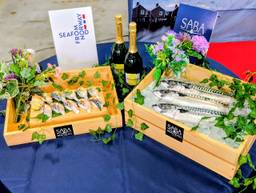
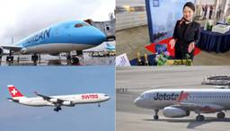
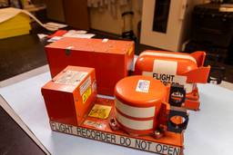
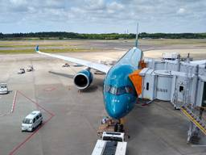

ブログRSS
フィード
人気フィード
ブログ一覧
sky-budget スカイバジェット
https://sky-budget.com
お得で役立つ世界の航空情報をいち早く発信！
フィード
スイスインターナショナルエアラインズ、3機目のA350-900を受領 10月より上海・ヨハネスブルグ線へ投入
sky-budget スカイバジェット
1時間前

空輸生サバ「サバヌーヴォー」が到着 JAL国際線の機内食やコストコなどでも販売 各地で味わえるスポットを紹介
sky-budget スカイバジェット
3時間前

先週のアクセス上位記事TOP10 (2026年9月6日～2026年9月12日)
sky-budget スカイバジェット
4時間前

マイアミ国際空港のAmazonの767F（21エア運航）のオーバーラン、NTSBがフライトデータと音声記録の初期解析を公表
sky-budget スカイバジェット
12時間前
カタール航空、2026〜2027年冬期ダイヤでネットワークを世界170都市以上に拡大
sky-budget スカイバジェット
1日前
トキエア、Jネットレンタカーと機内プロモーションを開始 全路線のヘッドレストカバーに広告を展開
sky-budget スカイバジェット
1日前
ANA、欧州からの訪日客向けに国内線が2区間無料になる「TOKYO+」を発売 インバウンドの地方送客を促進
sky-budget スカイバジェット
1日前

ベトナム航空、A350-900型機を5機追加導入へ エアバスと覚書を締結
sky-budget スカイバジェット
1日前
JALのドローン機体検査がもたらす「地味だが大きな変革」
sky-budget スカイバジェット
1日前
ベトラベル航空、エアバス機50機の購入の基本合意を発表 A220とA321XLRを含むA321neoファミリーを導入し2029年より受領へ
sky-budget スカイバジェット
2日前